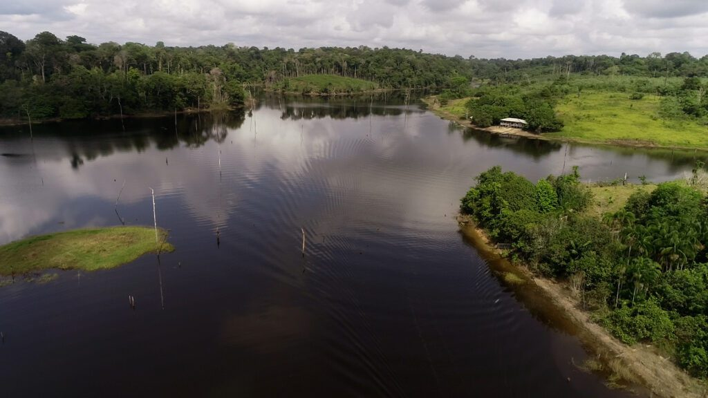
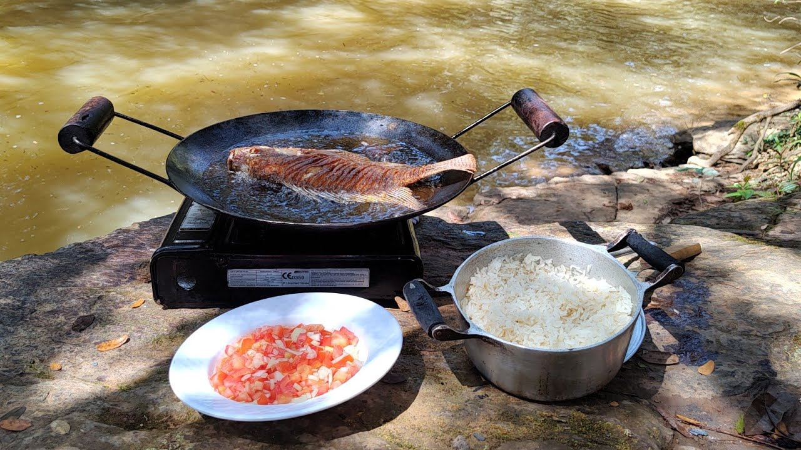
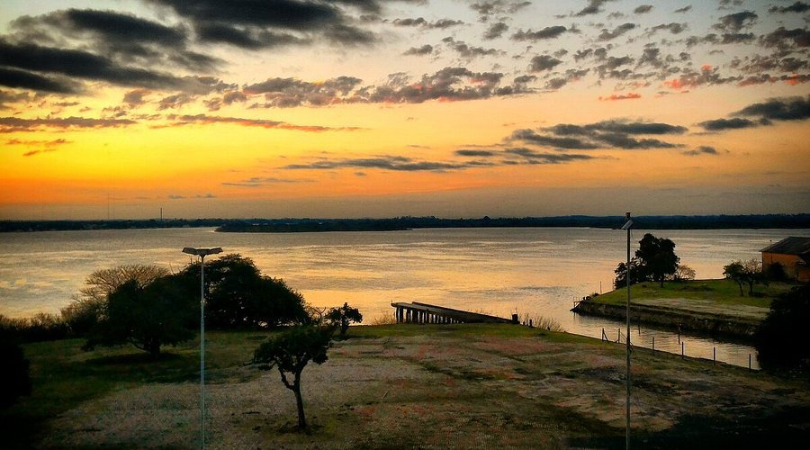

A pesca do tucunaré é uma das mais emocionantes no Brasil, conhecida pela força e agressividade do peixe. Nativo da Bacia Amazônica e do rio Tocantins, o tucunaré é um predador que ataca com explosões na superfície, proporcionando uma pescaria visualmente espetacular. As principais espécies são o tucunaré-açu, tucunaré-paca e tucunaré-azul. A pesca esportiva utiliza principalmente iscas artificiais, como hélices e zaras, exigindo habilidade e boa leitura do ambiente. A prática do pesque-e-solte é essencial para preservar a espécie e garantir a continuidade dessa tradição. Regiões como a Amazônia, o Rio Negro e o Lago do Peixe são destinos populares para pescadores, atraindo turistas de todo o mundo. A pesca do tucunaré, além de ser uma experiência inesquecível, também contribui para o turismo local e a conservação dos ecossistemas aquáticos.
Diversos lagos espalhados pela Amazônia e Centro-Oeste do Brasil são conhecidos por abrigarem o tucunaré, uma das espécies mais cobiçadas na pesca esportiva. Esses lagos, com suas águas tranquilas e vegetação abundante, criam o ambiente perfeito para os tucunarés, que são predadores agressivos e oferecem aos pescadores uma experiência emocionante. Espécies como o tucunaré-açu e tucunaré-azul habitam essas águas, atacando com força as iscas artificiais com explosões na superfície. A pesca nesses lagos exige técnica e paciência, já que o peixe é conhecido pela resistência e habilidade de fuga. O pesque-e-solte é uma prática fundamental, garantindo a preservação do tucunaré e mantendo o equilíbrio ecológico da região. Lagos como o do Rio Araguaia e o Lago de Peixe, em Goiás, se destacam pela biodiversidade e beleza natural, atraindo turistas de todo o mundo. A pesca do tucunaré nesses locais não é apenas uma diversão, mas também uma forma de promover o ecoturismo e a conservação ambiental.
Pescar em rios tranquilos é uma das experiências mais gratificantes para os amantes da pesca. A emoção de capturar peixes como o tucunaré, a traíra, o tambaqui e o curimbatá é única, mas o que torna a vivência ainda mais especial é a prática de fritar os peixes na beira do rio. Ao longo do dia, é possível sentir o frescor da água, o canto dos pássaros e o cheiro inconfundível da terra molhada. Depois de uma boa pesca, nada como preparar o peixe logo ali, no local, com uma fogueira simples e ingredientes frescos. A preparação é simples: o peixe é limpo, temperado e colocado na frigideira, sibilando na gordura quente. O aroma que se espalha pelo ar é de dar água na boca e faz a experiência ainda mais prazerosa. Além de saciar a fome, esse momento cria uma conexão profunda com a natureza e traz a sensação de completude. A pesca e o preparo imediato são um tributo à simplicidade e à beleza do ambiente natural, onde o prazer de pescar e comer fresquinho se encontra com a tranquilidade do rio.
A vista ao pescar em rios é uma experiência imersiva, onde a beleza natural se revela em cada detalhe. Ao chegar à margem, o pescador é recebido por um cenário tranquilo: as águas, claras e calmas, refletem o céu aberto, enquanto as árvores ao redor fornecem sombra e conforto. O som suave da correnteza traz uma sensação de paz, misturando-se ao canto dos pássaros e ao farfalhar das folhas. A paisagem dos rios, com suas curvas sinuosas e vegetação densa, cria um ambiente ideal para a pesca. O ar fresco e puro, longe da poluição das cidades, traz uma sensação de renovação e equilíbrio. Cada lançamento de linha é uma oportunidade para se conectar com a natureza, onde a serenidade do lugar permite que o pescador se desconecte das preocupações cotidianas. A tranquilidade do rio é um convite para aproveitar o momento, tornando cada pescaria uma experiência única e revigorante.